1 TL;DR
Factors are one of the two remaining types of data you’ll encounter on a fairly regular basis. This post will show you how to use the forcats tidyverse package in R so you’ll know how to handle factors when you encounter them.
![]()
image source: https://www.shutterstock.com/
2 Introduction
The 8th post of the Scientist’s Guide to R series covers how to work with factors in R and how the forcats package can simplify the process.
N.B. if anything I’m covering seems strange/confusing to you and you’re jumping into the series now, there’s a good chance I covered it in an earlier post and you can probably find the relevant section pretty quickly with the search bar that can be accessed via the magnifying glass icon at the top right corner of the page.
2.1 load packages
As usual, we’ll start by loading the packages we’ll need.
library(tidyverse) #note: forcats is installed and loaded with the tidyverse2.2 import data
For this post we’ll work with the gapminder data one last time so we can focus on applying new methods to data that we’re already familiar with. I promise we will use something different the next time we need to import data.
#in this case we import the data by loading the gapminder package
library(gapminder) A glimpse of the structure of the gapminder data using dplyr’s glimpse() function (loaded with the tidyverse) shows us that there are columns for the country and continent that are already both factors.
gapminder %>% glimpse() #%>% is the pipe operator (covered in an earlier post)## Rows: 1,704
## Columns: 6
## $ country <fct> "Afghanistan", "Afghanistan", "Afghanistan", "Afghanistan", ~
## $ continent <fct> Asia, Asia, Asia, Asia, Asia, Asia, Asia, Asia, Asia, Asia, ~
## $ year <int> 1952, 1957, 1962, 1967, 1972, 1977, 1982, 1987, 1992, 1997, ~
## $ lifeExp <dbl> 28.801, 30.332, 31.997, 34.020, 36.088, 38.438, 39.854, 40.8~
## $ pop <int> 8425333, 9240934, 10267083, 11537966, 13079460, 14880372, 12~
## $ gdpPercap <dbl> 779.4453, 820.8530, 853.1007, 836.1971, 739.9811, 786.1134, ~3 Factor basics
Factors were briefly introduced in an earlier post as modifications of character or numeric vectors which enables them to be used as categorical variables AKA nominal variables. Categorical variables take on a few discrete values or levels, e.g. biological sex (levels = Male & Female), or continent (levels = Asia, Africa, North America, South America, Antarctica, Europe, & Australia/Oceania). If you’re doing experimental work, you’ll need to use a factor to represent the variable encoding your experimental conditions or treatment groups.
Recall that a factor can be defined in R using the base R factor() function,
y <- rep(c("a", "b", "o"), 10) #a vector of the letters a, b, & c repeated 10x as an example
fruit_category <- factor(x = y, #vector you wish to use to define as a factor
#what are the unique values/levels of the factor
levels = c("a", "b", "o"),
#use the labels arg to change the labels of the factor
#levels
labels = c("Apples", "Bananas", "Oranges"),
#if you want the factor to be ordered set this to TRUE
#(i.e. for an ordinal variable)
ordered = FALSE)
fruit_category #prints the values of the factor and tells you what the levels of it are## [1] Apples Bananas Oranges Apples Bananas Oranges Apples Bananas Oranges
## [10] Apples Bananas Oranges Apples Bananas Oranges Apples Bananas Oranges
## [19] Apples Bananas Oranges Apples Bananas Oranges Apples Bananas Oranges
## [28] Apples Bananas Oranges
## Levels: Apples Bananas Oranges#N.B. if you don't care about the order of factor levels and are happy with the
#labels, you could instead convert a numeric or character vector to a factor
#using as.factor()To check the levels of a factor without printing out its values at the same time we can use the base R levels() function (similar to the base R unique() function for other vector types)
levels(fruit_category)## [1] "Apples" "Bananas" "Oranges"#this is more useful for the gapminder factors since we didn't define those
gapminder$continent %>% levels()## [1] "Africa" "Americas" "Asia" "Europe" "Oceania"gapminder$country %>% levels() %>% head(10) #show the 1st 10 levels## [1] "Afghanistan" "Albania" "Algeria" "Angola" "Argentina"
## [6] "Australia" "Austria" "Bahrain" "Bangladesh" "Belgium"You’ll primarily end up using factors in 2 circumstances: when fitting statistical models and plotting data. Although we won’t go into data visualization and modelling in too much detail until later in the series, we’ll get our toes wet here to spice things up a bit.
4 factors and data visualization
Ignoring the temporal nature of the data for now, let’s say we were interested in looking at the median life expectancy of each continent to see if there were any differences between them.
This can be done most easily using a non-parametric box-and-whisker plot, which shows the 25th percentile and 75th percentile as the bottom and top of the box, the median (i.e. 50th percentile) as a line inside the box, then whiskers extending above and below the box for more extreme values1 and circles for points beyond the whisker thresholds that may be outliers.
We can generate a box plot in R using the base R boxplot() function. In case you’re wondering, we will cover visualization techniques with the popular ggplot2 package in a future post.
#base R boxplot
boxplot(lifeExp ~ continent, #formula syntax of the form y-variable ~ x-variable
data = gapminder)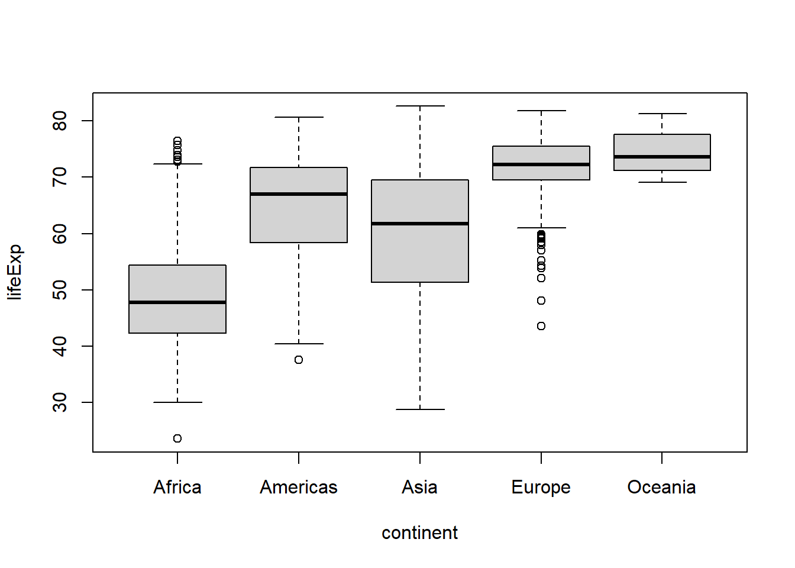
That’s great, but what if we wanted to reorder the levels of the factor so that the Americas appear first? We could redefine the continent factor using the factor() function, or we could use fct_relevel() from the forcats package (in conjunction with dplyr::mutate()).
#if we use factor() we need to specify all levels again
p1a <- gapminder %>%
#first modify the column using dplyr::mutate(), which was loaded with
#library(tidyverse)
mutate(continent = factor(continent,
levels = c("Americas", "Africa", "Asia", "Europe", "Oceania"))
) %>%
#recall that "." is used to specify which argument the output from whatever
#was before the %>% (pipe operator) should be passed to
boxplot(lifeExp ~ continent, data = .)
#for fct_relevel you only need to mention the levels you want to rearrange
p1b <- gapminder %>%
mutate(continent = fct_relevel(continent, "Americas")
#by default levels you mention move to the front
) %>%
boxplot(lifeExp ~ continent, data = .) 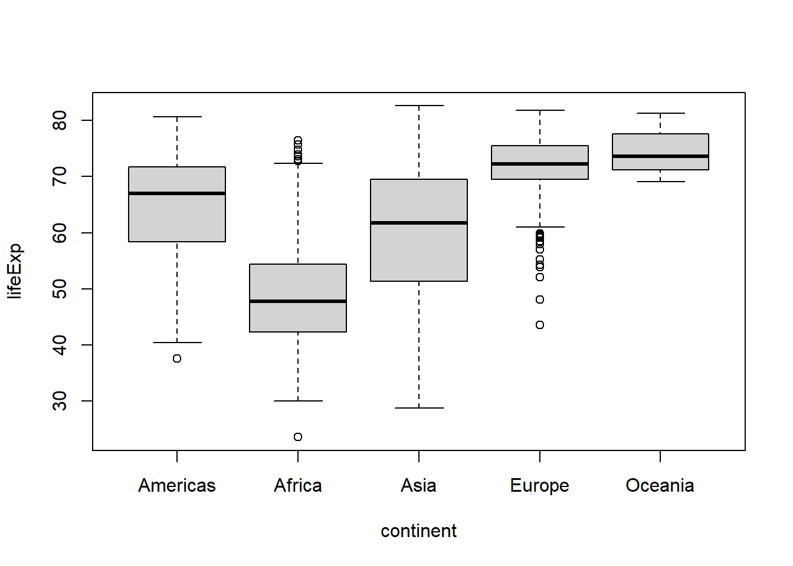
identical(p1a, p1b)## [1] TRUE#both options have the same effect on the plot
#if we wanted to move the data for the Americas to the end, we could use the
#"after" argument
gapminder %>%
mutate(continent = fct_relevel(continent, "Americas",
after = Inf)
#here the special character set "Inf" specifies the end
) %>%
boxplot(lifeExp ~ continent, data = .) 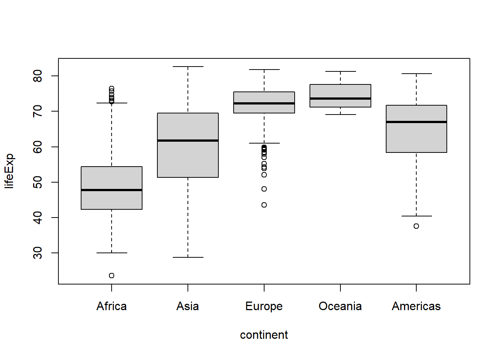
#or to the 4th position
gapminder %>%
mutate(continent = fct_relevel(continent, "Americas",
after = 3)
) %>%
boxplot(lifeExp ~ continent, data = .) 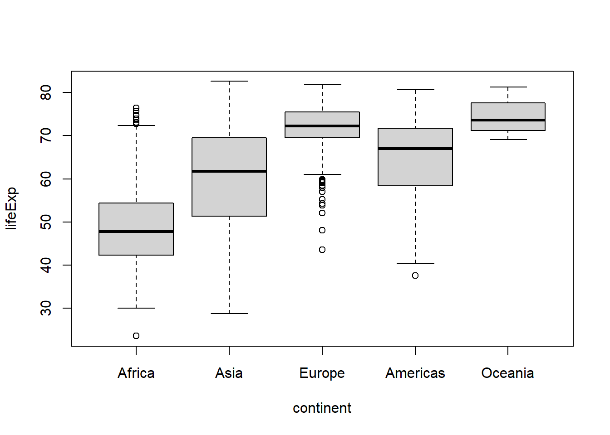
In addition to manually reordering the levels of a factor using fct_relevel(), you can reorder a factor based on another variable with fct_reorder(), e.g. if you want them to appear in order of ascending life expectancy:
gapminder %>%
mutate(continent = fct_reorder(continent, lifeExp)
) %>%
boxplot(lifeExp ~ continent, data = .) 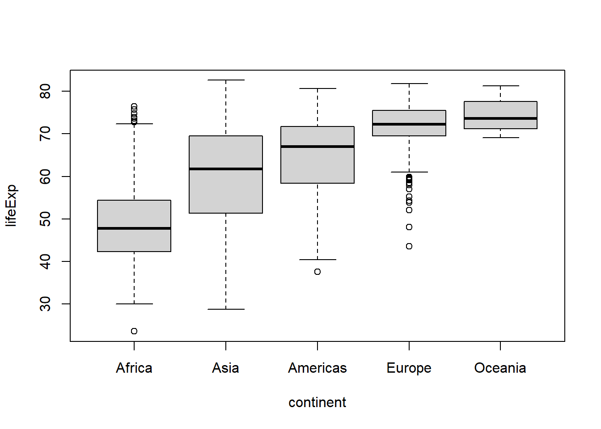
#to sort in descending order add .desc = TRUE in the fct_reorder call.
gapminder %>%
mutate(continent = fct_reorder(continent, lifeExp,
.desc = TRUE)
) %>%
boxplot(lifeExp ~ continent, data = .) 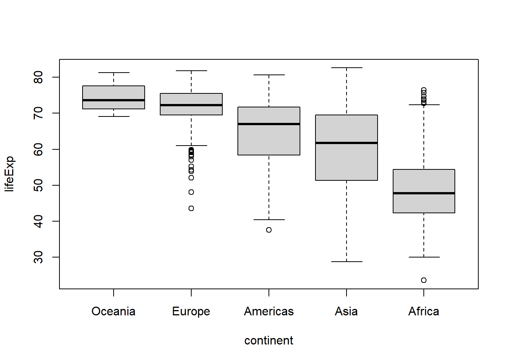
A way to remember the difference between fct_relevel() and fct_reorder() is that fct_relevel() allows you manually specify the levels of a factor, while fct_reorder() lets you re-order a factor based on the order of another variable.
To modify the values of a factor you can use either the labels argument of the base R factor() function and (again) have to specify all values and labels, which can become tedious really fast, or you can just forcats::fct_recode(). For example, let’s say we wanted to change continent values of “Oceania” to “Australia”:
#base R's factor()
gapminder %>%
mutate(continent = factor(continent,
#all existing unique values/levels you want to use
#need to be specified
levels = c("Africa", "Americas", "Asia", "Europe", "Oceania"),
#one label per level needs to be specified, in the
#same order as the levels
labels = c("Africa", "Americas", "Asia", "Europe", "Australia"))
) %>%
boxplot(lifeExp ~ continent, data = .)
#using forcats::fct_recode()
gapminder %>%
mutate(continent = fct_recode(continent,
#only the value(s) you want to recode need to be
#specified
"Australia" = "Oceania") #"new value" = "old value"
) %>%
boxplot(lifeExp ~ continent, data = .) 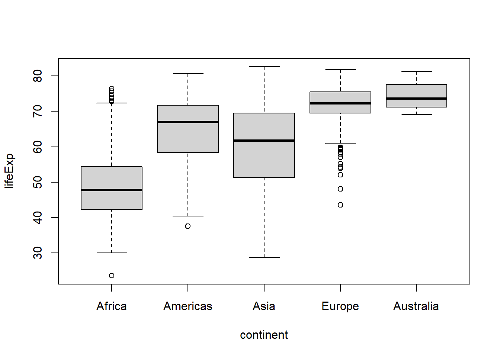
Forcats also makes it easy to aggregate levels using fct_recode(), fct_collapse(), or fct_lump_*(). The main difference is that fct_recode() is for manually recoding of categories, while fct_lump_*() will combine categories based on a criterion like those with counts less than a specified threshold.
For example, if we wanted to view the combined data for Europe and Asia under the label “Eurasia”, we could do so using fct_recode() or a shortcut function called fct_collapse():
gapminder %>%
mutate(continent = fct_recode(continent,
#use the same label for more than one value to
#aggregate
"Eurasia" = "Europe",
"Eurasia" = "Asia")
) %>%
boxplot(lifeExp ~ continent, data = .)
#a shortcut for this use of fct_recode() is fct_collapse()
gapminder %>%
mutate(continent = fct_collapse(continent,
"Eurasia" = c("Europe", "Asia"))
) %>%
boxplot(lifeExp ~ continent, data = .) 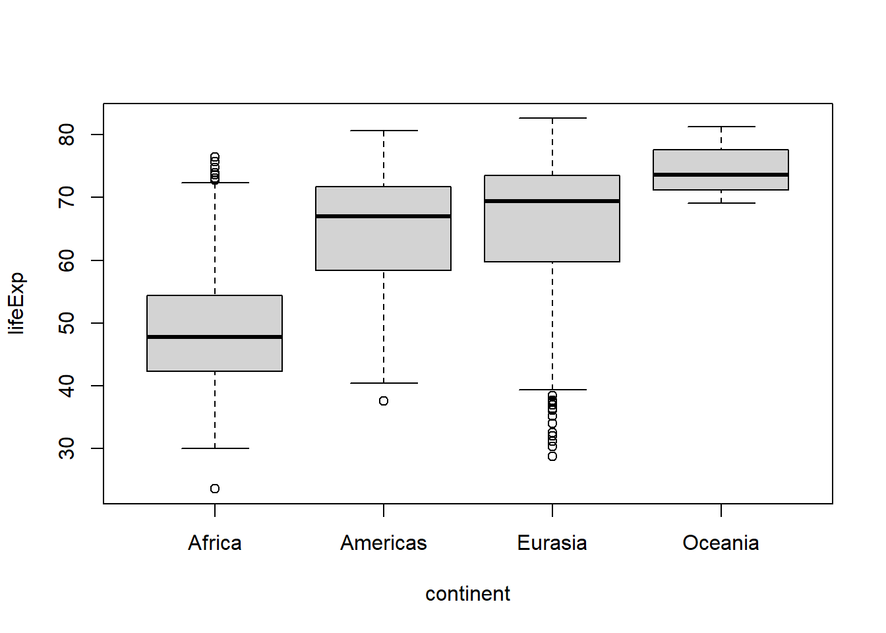
Or if we wanted to aggregate the data for the continents other than the top 2 most common values we could use fct_lump_n():
gapminder %>%
mutate(continent = fct_lump_n(continent,
#the n argument determines the number of levels to
#retain (in order of descending frequency of
#appearance)
n = 2,
#the other_level argument is used to set the label
#for the new category representing the former
#uncommon categories
other_level = "Other" #default label is "Other"
)
) %>%
boxplot(lifeExp ~ continent, data = .) 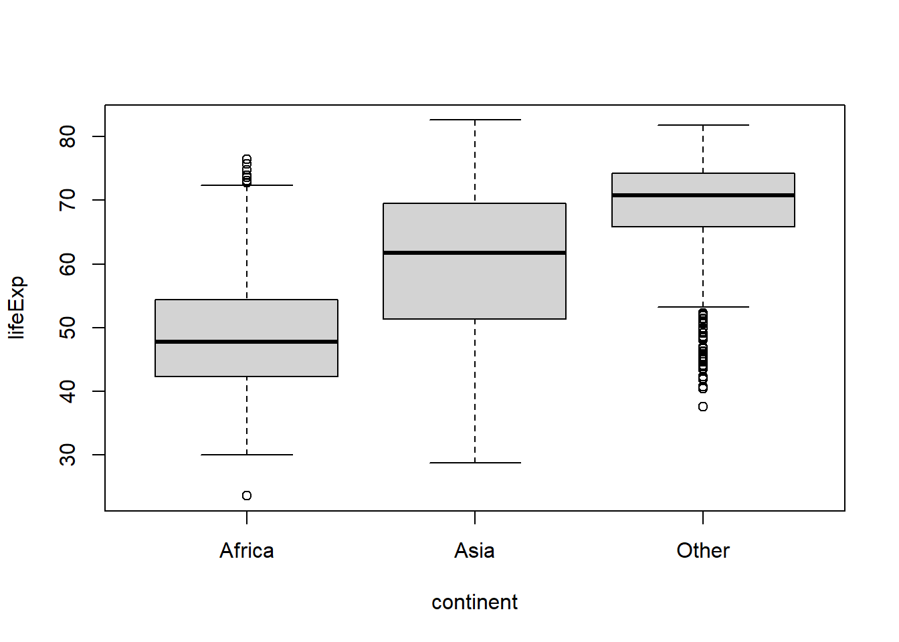
#or to lump together categories appearing less than a minimum number of times,
#use fct_lump_min()
gapminder %>%
mutate(continent = fct_lump_min(continent,
#the min argument defines the minimum
#frequency threshold for a category to avoid
#being lumped together. For this demo we'll
#use the mean count of each continent using
#the mean() and table() functions and lump
#together continents appearing less often than
#that
min = mean(table(gapminder$continent)))
) %>%
boxplot(lifeExp ~ continent, data = .) 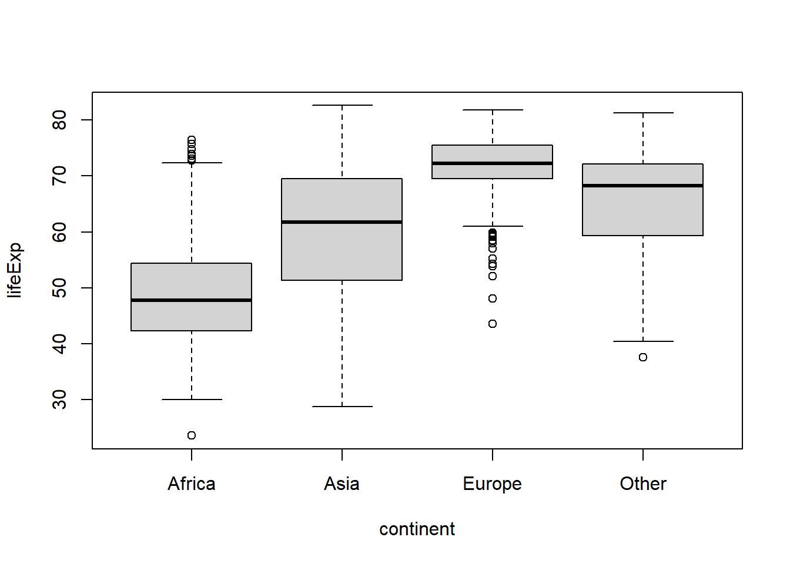
There are a few other fct_lump_* variants that you can learn about in the fct_lump() documentation.
To drop unused levels of a factor you can use fct_drop(). If we filter the gapminder data to drop records for Africa, we might be surprised to see that levels(gapminder$continent) still lists Africa as one of the levels for the continent factor (despite the fact that there are no longer any records for it). In this case, the factor retains the original level coding but one of the levels is no longer represented in the data. To remove that unused level we can use fct_drop():
#save this subset as a new object so we don't overwrite the original data frame
gap2 <- gapminder %>%
filter(continent != "Africa")
gap2$continent %>% levels()## [1] "Africa" "Americas" "Asia" "Europe" "Oceania"#check the counts of each level
gap2$continent %>% table() #no records for Africa, as expected!## .
## Africa Americas Asia Europe Oceania
## 0 300 396 360 24#what's worse, Africa still shows up (without any data) when we try to graph
#life expectancy as a function of continent
boxplot(lifeExp ~ continent, gap2)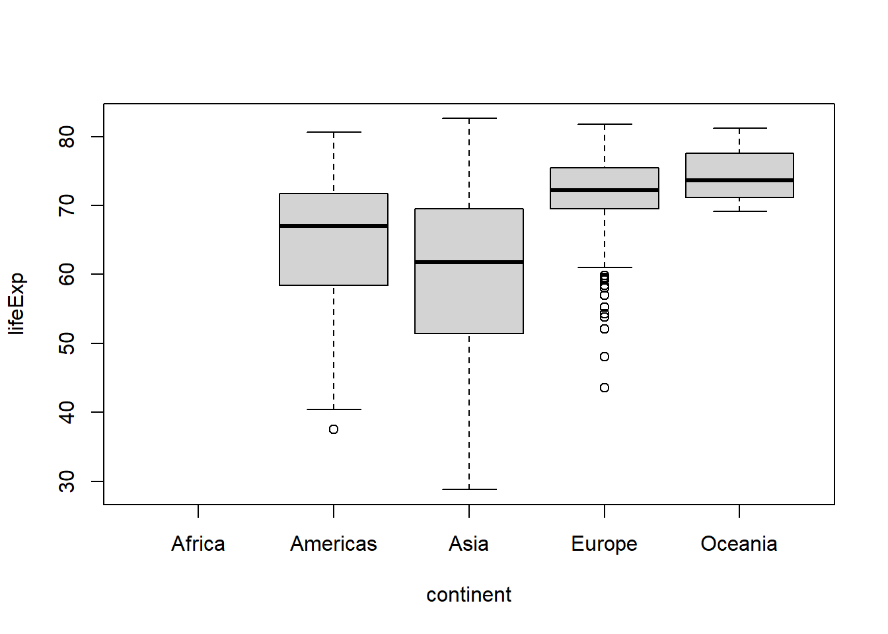
#drop the unused level
gap2 <- gap2 %>%
mutate(continent = fct_drop(continent))
gap2$continent %>% levels()## [1] "Americas" "Asia" "Europe" "Oceania"#now we don't have to worry about it anymore5 factors and modelling
To see how factor levels affect modelling, lets fit a basic linear regression model to see if life expectancy is differs between continents using the base R lm() & summary() functions.
#fit the model
linear_regression_model <- lm(lifeExp ~ continent,
#dependent variable ~ independent variable(s)
#AKA response ~ predictor(s)
data = gapminder)
#print the model results summary using the summary() function
summary(linear_regression_model)##
## Call:
## lm(formula = lifeExp ~ continent, data = gapminder)
##
## Residuals:
## Min 1Q Median 3Q Max
## -31.2639 -5.4537 0.3297 6.0480 27.5767
##
## Coefficients:
## Estimate Std. Error t value Pr(>|t|)
## (Intercept) 48.8653 0.3696 132.22 <2e-16 ***
## continentAmericas 15.7934 0.6486 24.35 <2e-16 ***
## continentAsia 11.1996 0.5931 18.88 <2e-16 ***
## continentEurope 23.0384 0.6110 37.70 <2e-16 ***
## continentOceania 25.4609 1.9204 13.26 <2e-16 ***
## ---
## Signif. codes: 0 '***' 0.001 '**' 0.01 '*' 0.05 '.' 0.1 ' ' 1
##
## Residual standard error: 9.232 on 1699 degrees of freedom
## Multiple R-squared: 0.4904, Adjusted R-squared: 0.4892
## F-statistic: 408.7 on 4 and 1699 DF, p-value: < 2.2e-16Ignoring most of the output for now (which will be covered in detail in a future post on modelling in R), we can see a set of t-tests for each level of the continent factor except for Africa. This is because when an lm() object is passed to the summary() function, R evaluates linear regression predictor variables that are factors by comparing each category to a baseline/reference category, which happens to be “Africa” in this case. If the assumptions of the linear regression model are valid, this output tells us if the life expectancy (what we’ve specified as the dependent variable) of each non-African continent is statistically equivalent or not (b/c in frequentist stats we’re evaluating a null hypothesis of equivalence) compared to the life expectancy of Africa.
What if you wanted to compare each continent to the Americas instead? Just relevel the continent factor and make Americas the first level.
#fit the model
linear_regression_model <- lm(lifeExp ~ continent,
data = gapminder %>%
mutate(continent =
fct_relevel(continent,
#make Americas the new "reference" level
"Americas"))
)
#print the model results summary using the summary() function
summary(linear_regression_model)##
## Call:
## lm(formula = lifeExp ~ continent, data = gapminder %>% mutate(continent = fct_relevel(continent,
## "Americas")))
##
## Residuals:
## Min 1Q Median 3Q Max
## -31.2639 -5.4537 0.3297 6.0480 27.5767
##
## Coefficients:
## Estimate Std. Error t value Pr(>|t|)
## (Intercept) 64.6587 0.5330 121.309 < 2e-16 ***
## continentAfrica -15.7934 0.6486 -24.350 < 2e-16 ***
## continentAsia -4.5938 0.7066 -6.501 1.05e-10 ***
## continentEurope 7.2449 0.7217 10.039 < 2e-16 ***
## continentOceania 9.6675 1.9584 4.936 8.74e-07 ***
## ---
## Signif. codes: 0 '***' 0.001 '**' 0.01 '*' 0.05 '.' 0.1 ' ' 1
##
## Residual standard error: 9.232 on 1699 degrees of freedom
## Multiple R-squared: 0.4904, Adjusted R-squared: 0.4892
## F-statistic: 408.7 on 4 and 1699 DF, p-value: < 2.2e-16Now the life expectancy of each non-American continent is being compared to the life expectancy of the Americas.
BTW, in case you were wondering, we will cover how to get the usual ANOVA outputs for linear models that you may be more accustomed to seeing in a later post.
Now you know the basics of the forcats package which should help you work with factors in R. Here’s another cute cat picture for making it to the end…
image source: https://www.boredpanda.com/
7 Notes
To learn more about factors and dates in R see this chapter of R 4 Data Science.
A further bonus of the forcats functions like
fct_reorder()is that you can give them a character vector instead of a factor as input they will automatically convert that character vector into a factor for you (However, unlike the stringr functions, this doesn’t work for other vector types like numeric/integer vectors).
Thank you for visiting my blog. I welcome any suggestions for future posts, comments or other feedback you might have. Feedback from beginners and science students/trainees (or with them in mind) is especially helpful in the interest of making this guide even better for them.
This blog is something I do as a volunteer in my free time. If you’ve found it helpful and want to give back, coffee donations would be appreciated.
whiskers are plotted at 1.5x the interquartile range from the top & bottom lines of the box or the maximum/minimum value if no values are above/below that 1.5*IQR threshold↩︎